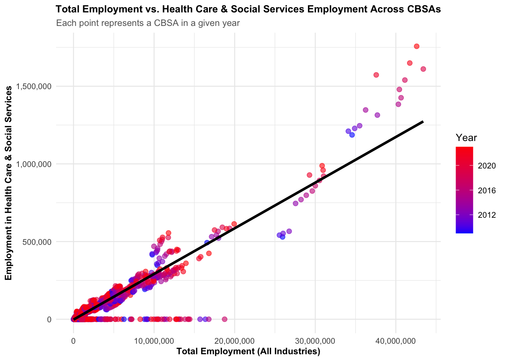

This project examines housing affordability in U.S. cities, with a focus on YIMBYism (Yes In My Backyard) and its impact on zoning and housing policy. Drawing inspiration from Ray Delahanty (CityNerd), it uses alternative data sources—including census statistics and real estate indices—to identify the most “YIMBY” cities, where policies effectively support more affordable housing. The analysis combines data manipulation, visualization, and summary techniques to inform a policy brief advocating for a federal YIMBY-incentive program. The project demonstrates how data-driven insights can guide policy decisions and political strategies to address housing affordability challenges.
Data Import
Directory Setup, Package Management, and Data Retrieval for ACS Variables: Household Income, Rent, Population, and Households
This step is to performs a series of operations aimed at setting up the environment and downloading U.S. Census Bureau’s American Community Survey (ACS) data for analysis.
Show Code
if(!dir.exists(file.path("data", "mp02"))){dir.create(file.path("data", "mp02"), showWarnings=FALSE, recursive=TRUE)}library <-function(pkg){## Mask base::library() to automatically install packages if needed## Masking is important here so downlit picks up packages and links## to documentation pkg <-as.character(substitute(pkg))options(repos =c(CRAN ="https://cloud.r-project.org"))if(!require(pkg, character.only=TRUE, quietly=TRUE)) install.packages(pkg)stopifnot(require(pkg, character.only=TRUE, quietly=TRUE))}library(tidyverse)library(glue)library(readxl)library(tidycensus)get_acs_all_years <-function(variable, geography="cbsa",start_year=2009, end_year=2023){ fname <-glue("{variable}_{geography}_{start_year}_{end_year}.csv") fname <-file.path("data", "mp02", fname)if(!file.exists(fname)){ YEARS <-seq(start_year, end_year) YEARS <- YEARS[YEARS !=2020] # Drop 2020 - No survey (covid) ALL_DATA <-map(YEARS, function(yy){ tidycensus::get_acs(geography, variable, year=yy, survey="acs1") |>mutate(year=yy) |>select(-moe, -variable) |>rename(!!variable := estimate) }) |>bind_rows()write_csv(ALL_DATA, fname) }read_csv(fname, show_col_types=FALSE)}# Household income (12 month)INCOME <-get_acs_all_years("B19013_001") |>rename(household_income = B19013_001)# Monthly rentRENT <-get_acs_all_years("B25064_001") |>rename(monthly_rent = B25064_001)# Total populationPOPULATION <-get_acs_all_years("B01003_001") |>rename(population = B01003_001)# Total number of householdsHOUSEHOLDS <-get_acs_all_years("B11001_001") |>rename(households = B11001_001)
Downloading and Preparing Building Permits Data for New Housing Units (2009-2023)
This step will download and prepare data on new housing units permitted across Core-Based Statistical Areas (CBSAs) for the years 2009 to 2023, including both historical and current data from the U.S. Census Bureau.
Downloading and Processing BLS Industry Codes (NAICS) from the Bureau of Labor Statistics
This step is designed to download, process, and save industry classification data from the Bureau of Labor Statistics (BLS). It focuses on extracting NAICS (North American Industry Classification System) codes and their associated titles for different industry sectors.
Show Code
library(httr2)library(rvest)get_bls_industry_codes <-function(){ fname <-file.path("data", "mp02", "bls_industry_codes.csv")library(dplyr)library(tidyr)library(readr)if(!file.exists(fname)){ resp <-request("https://www.bls.gov") |>req_url_path("cew", "classifications", "industry", "industry-titles.htm") |>req_headers(`User-Agent`="Mozilla/5.0 (Macintosh; Intel Mac OS X 10.15; rv:143.0) Gecko/20100101 Firefox/143.0") |>req_error(is_error = \(resp) FALSE) |>req_perform()resp_check_status(resp) naics_table <-resp_body_html(resp) |>html_element("#naics_titles") |>html_table() |>mutate(title =str_trim(str_remove(str_remove(`Industry Title`, Code), "NAICS"))) |>select(-`Industry Title`) |>mutate(depth =if_else(nchar(Code) <=5, nchar(Code) -1, NA)) |>filter(!is.na(depth))# These were looked up manually on bls.gov after finding # they were presented as ranges. Since there are only three# it was easier to manually handle than to special-case everything else naics_missing <- tibble::tribble(~Code, ~title, ~depth, "31", "Manufacturing", 1,"32", "Manufacturing", 1,"33", "Manufacturing", 1,"44", "Retail", 1, "45", "Retail", 1,"48", "Transportation and Warehousing", 1, "49", "Transportation and Warehousing", 1 ) naics_table <-bind_rows(naics_table, naics_missing) naics_table <- naics_table |>filter(depth ==4) |>rename(level4_title=title) |>mutate(level1_code =str_sub(Code, end=2), level2_code =str_sub(Code, end=3), level3_code =str_sub(Code, end=4)) |>left_join(naics_table, join_by(level1_code == Code)) |>rename(level1_title=title) |>left_join(naics_table, join_by(level2_code == Code)) |>rename(level2_title=title) |>left_join(naics_table, join_by(level3_code == Code)) |>rename(level3_title=title) |>select(-starts_with("depth")) |>rename(level4_code = Code) |>select(level1_title, level2_title, level3_title, level4_title, level1_code, level2_code, level3_code, level4_code) |>drop_na() |>mutate(across(contains("code"), as.integer))write_csv(naics_table, fname) }read_csv(fname, show_col_types=FALSE)}INDUSTRY_CODES <-get_bls_industry_codes()
Downloading and Processing BLS Quarterly Census of Employment and Wages (QCEW) Annual Averages (2009-2023)
This step is designed to download, process, and save the Bureau of Labor Statistics’ (BLS) Quarterly Census of Employment and Wages (QCEW) data for the years 2009 to 2023, with adjustments for missing data due to the COVID-19 pandemic.
Show Code
library(httr2)library(rvest)get_bls_qcew_annual_averages <-function(start_year=2009, end_year=2023){ fname <-glue("bls_qcew_{start_year}_{end_year}.csv.gz") fname <-file.path("data", "mp02", fname) YEARS <-seq(start_year, end_year) YEARS <- YEARS[YEARS !=2020] # Drop Covid year to match ACSif(!file.exists(fname)){ ALL_DATA <-map(YEARS, .progress=TRUE, possibly(function(yy){ fname_inner <-file.path("data", "mp02", glue("{yy}_qcew_annual_singlefile.zip"))if(!file.exists(fname_inner)){request("https://www.bls.gov") |>req_url_path("cew", "data", "files", yy, "csv",glue("{yy}_annual_singlefile.zip")) |>req_headers(`User-Agent`="Mozilla/5.0 (Macintosh; Intel Mac OS X 10.15; rv:143.0) Gecko/20100101 Firefox/143.0") |>req_retry(max_tries=5) |>req_perform(fname_inner) }if(file.info(fname_inner)$size <755e5){warning(sQuote(fname_inner), "appears corrupted. Please delete and retry this step.") }read_csv(fname_inner, show_col_types=FALSE) |>mutate(YEAR = yy) |>select(area_fips, industry_code, annual_avg_emplvl, total_annual_wages, YEAR) |>filter(nchar(industry_code) <=5, str_starts(area_fips, "C")) |>filter(str_detect(industry_code, "-", negate=TRUE)) |>mutate(FIPS = area_fips, INDUSTRY =as.integer(industry_code), EMPLOYMENT =as.integer(annual_avg_emplvl), TOTAL_WAGES = total_annual_wages) |>select(-area_fips, -industry_code, -annual_avg_emplvl, -total_annual_wages) |># 10 is a special value: "all industries" , so omitfilter(INDUSTRY !=10) |>mutate(AVG_WAGE = TOTAL_WAGES / EMPLOYMENT) })) |>bind_rows()write_csv(ALL_DATA, fname) } ALL_DATA <-read_csv(fname, show_col_types=FALSE) ALL_DATA_YEARS <-unique(ALL_DATA$YEAR) YEARS_DIFF <-setdiff(YEARS, ALL_DATA_YEARS)if(length(YEARS_DIFF) >0){stop("Download failed for the following years: ", YEARS_DIFF, ". Please delete intermediate files and try again.") } ALL_DATA}WAGES <-get_bls_qcew_annual_averages()
Relationship Diagram
Click here for diagram notes
This diagram shows the join keys between ACS, Census, and BLS datasets. Key points: - INCOME, POPULATION, and RENT join by GEOID + year - PERMITS uses CBSA, mapped to GEOID - WAGES uses FIPS, can be aggregated
Multi-Tables Questions
Question 1: Identifying the Metropolitan Area with the Highest New Housing Units Permitted
Show Code
library(dplyr)library(DT)top_housing_metros <- PERMITS %>%filter(year >=2010, year <=2019) %>%group_by(CBSA) %>%summarise(total_units =sum(new_housing_units_permitted, na.rm =TRUE)) %>%left_join(INCOME %>%distinct(GEOID, NAME), by =c("CBSA"="GEOID")) %>%arrange(desc(total_units)) %>%slice(1) %>%ungroup()datatable( top_housing_metros,options =list(searching =FALSE, info =FALSE),caption ='Top Metropolitan Area by New Housing Units Permitted (2010-2019)',colnames =c("CBSA", "Total Units", "Name") )
The Houston-Sugar Land-Baytown, TX Metro Area (CBSA code 26420) permitted the largest number of new housing units in the decade from 2010 to 2019, with a total of 482,075 new housing units. This area stands out as the top metropolitan area in terms of new housing construction during that period.
Question 2: Analyzing Housing Construction Patterns in Albuquerque Metropolitan Area (CBSA 10740)
Show Code
library(DT)library(dplyr)albuquerque_construction <- PERMITS %>%filter(CBSA ==10740) %>%group_by(year) %>%summarise(`Housing Units Permitted`=sum(new_housing_units_permitted, na.rm =TRUE)) %>%arrange(year) # Display the results in an interactive tabledatatable( albuquerque_construction,caption ='Annual Housing Production: Albuquerque Metropolitan Area',colnames =c("Year", "New Housing Units Permitted") ,options =list(pageLength =10, searching =FALSE, dom ='tip' ))
Based on the data provided, Albuquerque, NM (CBSA code 10740) permitted the most new housing units in 2021, with a total of 4,021 new units. 2021 had the highest number of new housing units permitted, likely driven by a post-pandemic recovery surge in construction activity. The pre-pandemic peak in 2013 (2,606 units) remains the highest before the pandemic’s impact. The subsequent years reflect more typical trends, with a noticeable increase in 2021.
Key Observations:
The 2021 peak is significant and could be a recovery-driven anomaly, especially considering the COVID-19 disruption in 2020. 2022 and 2023 show a decline from 2021, suggesting that the surge in 2021 may have been a short-lived rebound.
Therefore, 2021 is the year with the most new housing units permitted in Albuquerque, NM, based on this data, and it should be understood in the context of the pandemic’s effects on the housing market.
Question 3: Identifying the State with the Highest Average Individual Income in 2015
Show Code
library(dplyr)library(DT)library(stringr)library(scales)state_income_data <- INCOME %>%filter(year ==2015) %>%left_join(HOUSEHOLDS %>%filter(year ==2015), by =c("GEOID"="GEOID")) %>%left_join(POPULATION %>%filter(year ==2015), by =c("GEOID"="GEOID")) %>%mutate(`Total Income Per CBSA`= household_income * households,`State`=str_extract(NAME.x, ", (.{2})", group =1) ) %>%select(GEOID, `State`, `Total Income Per CBSA`, population) %>%group_by(State) %>%summarise(total_income_state =sum(`Total Income Per CBSA`, na.rm =TRUE),total_population_state =sum(population, na.rm =TRUE) ) %>%mutate(`Average Individual Income`= total_income_state / total_population_state) %>%arrange(desc(`Average Individual Income`)) %>%slice_head(n =5) %>%mutate(total_income_state =dollar(total_income_state, big.mark =","),total_population_state =format(total_population_state, big.mark =","),`Average Individual Income`=dollar(`Average Individual Income`, big.mark =",") )datatable( state_income_data,caption ='Top 5 States with the Highest Average Individual Income in 2015',options =list(searching =FALSE, info =FALSE),colnames =c("State", "Total Income State", "Total Population State", "Average Individual Income"))
Based on the analysis of the 2015 data, the state with the highest average individual income is Washington, D.C. (DC). Here are the key details:
Total Income: $202,663,489,140
Total Population: 6,098,283
Average Individual Income: $33,232.88
This suggests that Washington, D.C. had the highest average individual income in 2015, driven by its unique economic characteristics, including high-paying government and private sector jobs.
Question 4: Identifying the Year When the NYC CBSA Had the Most Data Scientists in the Country
Show Code
library(dplyr)library(DT)ds_cbsa <- INCOME %>%mutate(std_cbsa =paste0("C", GEOID)) %>%inner_join( WAGES %>%mutate(std_cbsa =paste0(FIPS, "0")),by ="std_cbsa",relationship ="many-to-many" ) %>%filter(INDUSTRY ==5182) %>%group_by(YEAR, std_cbsa) %>%summarise(Employment_Number =sum(EMPLOYMENT, na.rm =TRUE), .groups ="drop") %>%group_by(YEAR) %>%slice_max(Employment_Number, n =1) %>%ungroup() %>%filter(std_cbsa =="C35620") %>%arrange(desc(YEAR))datatable( ds_cbsa,caption ="NYC CBSA Data Scientists: Last Years with Highest Employment",options =list(searching =FALSE, info =FALSE),colnames =c("Year", "CBSA", "Employment Number"))
Based on the analysis of data scientists and business analysts (NAICS code 5182) across all CBSAs in the United States, the New York City CBSA (C35620) last led the country in total data scientist employment in 2015, with 264,908 data scientists.
Question 5: Fraction of Total Wages in NYC CBSA Earned by Finance & Insurance Workers (NAICS 52) and Peak Year
Show Code
library(dplyr)library(DT)library(scales)WAGES %>%filter(FIPS =="C3562") %>%group_by(YEAR) %>%summarise(`Total Wages`=sum(TOTAL_WAGES, na.rm =TRUE),`Finance and Insurance Wages`=sum(ifelse(INDUSTRY ==52, TOTAL_WAGES, 0), na.rm =TRUE),`Fraction`=`Finance and Insurance Wages`/`Total Wages` ) %>%arrange(desc(`Fraction`)) %>%mutate(`Year`= YEAR,`Total Wages`=dollar(`Total Wages`, big.mark =","),`Finance and Insurance Wages`=dollar(`Finance and Insurance Wages`, big.mark =","),`Fraction`= scales::percent(`Fraction`, accuracy =0.01) ) %>%select(Year, `Total Wages`, `Finance and Insurance Wages`, `Fraction`) %>%datatable(caption ="Fraction of Total Wages in NYC CBSA Earned by Finance & Insurance (NAICS 52)",options =list(searching =FALSE, info =FALSE) )
In the NYC CBSA, employees in the finance and insurance industries (NAICS 52) earned a significant portion of the total wages. By calculating the fraction of total wages each year, we find that this fraction peaked in 2014, when approximately 4.60% of all wages in the NYC CBSA were earned by finance and insurance workers. This highlights the strong influence of the finance and insurance sector on NYC’s overall wage distribution during that period.
Initial Visualizations
Relationship Between Monthly Rent and Average Household Income Across U.S. Metro Areas (2009)
Show Code
library(ggplot2)library(dplyr)library(scales)Q1 <- INCOME %>%filter(year ==2009) %>%inner_join(RENT %>%filter(year ==2009), by ="GEOID") %>%select(NAME.x, household_income, monthly_rent)ggplot(Q1, aes(x = household_income, y = monthly_rent)) +geom_point(alpha =0.3, color ="#FF69B4", size =2.5) +# Pink points with more transparencystat_smooth(method ="lm", se =FALSE, color ="darkred", linewidth =1.2) +# Dark red regression linelabs(title ="Relationship Between Monthly Rent and Average Household Income (2009)",subtitle ="Each point represents a U.S. metro area",x ="Average Household Income (USD)",y ="Median Monthly Rent (USD)" ) +scale_x_continuous(labels =dollar_format()) +scale_y_continuous(labels =dollar_format()) +theme_minimal(base_size =14) +theme(plot.title =element_text(face ="bold", size =12, hjust =0.5),plot.subtitle =element_text(size =11, color ="gray40"),axis.title =element_text(face ="bold", size =11),axis.text =element_text(size =10),panel.grid.minor =element_blank() )
The 2009 data show a strong positive relationship between average household income and median monthly rent across U.S. metro areas. Higher-income CBSAs generally experience higher rents, though some cities have rents above or below the trend line, indicating local variations in housing affordability. Most metro areas cluster around moderate income and rent levels, highlighting that housing costs scale with income but can differ significantly depending on local market conditions.
These patterns support the YIMBY (Yes In My Backyard) perspective, suggesting that in higher-income areas, housing supply may be insufficient, contributing to high rents. Areas above the trend line could benefit most from permissive zoning and policies that encourage more housing construction, reinforcing the idea that increasing housing availability is key to controlling prices and improving affordability.
Evolution of Total Employment vs. Health Care & Social Services Employment Across CBSAs
Show Code
library(dplyr)library(ggplot2)library(scales)healthcare_employment <- WAGES %>%group_by(std_cbsa =paste0(FIPS, "0"), YEAR) %>%summarise(total_employment =sum(EMPLOYMENT, na.rm =TRUE),healthcare_employment =sum(ifelse(INDUSTRY ==62, EMPLOYMENT, 0), na.rm =TRUE),.groups ="drop" )ggplot(healthcare_employment, aes(x = total_employment, y = healthcare_employment, color = YEAR)) +geom_point(alpha =0.6, size =2) +geom_smooth(method ="lm", color ="black", linewidth =1.2, se =FALSE) +# Red trend linescale_x_continuous(labels =comma_format()) +scale_y_continuous(labels =comma_format()) +scale_color_gradient(low ="blue", high ="red") +labs(title ="Total Employment vs. Health Care & Social Services Employment Across CBSAs",subtitle ="Each point represents a CBSA in a given year",x ="Total Employment (All Industries)",y ="Employment in Health Care & Social Services",color ="Year" ) +theme_minimal(base_size =10) +# Smaller base font sizetheme(plot.title =element_text(face ="bold", size =10, hjust =0.5),plot.subtitle =element_text(size =9, color ="gray40"),axis.title =element_text(face ="bold", size =9),axis.text =element_text(size =8) )

The plot shows a positive correlation between total employment and healthcare/social services employment across CBSAs from 2009–2023, with both generally increasing over time. Some metro areas have a higher share of healthcare employment than others. This suggests that growing healthcare workforces may contribute to increased housing demand, supporting the need for policies that promote more housing development, in line with YIMBY principles.
Evolution of Average Household Size Across U.S. CBSAs (2009–2023)
Show Code
library(dplyr)library(ggplot2)library(tidyr)library(ggrepel)household_trends <- POPULATION %>%full_join(HOUSEHOLDS, by =c("GEOID", "year", "NAME")) %>%filter(!is.na(households) &!is.na(population)) %>%mutate(household_size = population / households)nyc_name <- household_trends$NAME[grep("New York", household_trends$NAME)][1]la_name <- household_trends$NAME[grep("Los Angeles", household_trends$NAME)][1]household_trends <- household_trends %>%mutate(highlight_group =case_when( NAME == nyc_name ~"New York", NAME == la_name ~"Los Angeles",TRUE~"Other" ))# Split data for claritybackground <-subset(household_trends, highlight_group =="Other")highlighted <-subset(household_trends, highlight_group !="Other")ggplot() +geom_line(data = background, aes(x = year, y = household_size, group = NAME),color ="grey80", alpha =0.5, linewidth =0.7) +geom_line(data = highlighted, aes(x = year, y = household_size, color = highlight_group),linewidth =1.5) +geom_text_repel(data = highlighted %>%filter(year ==max(year)),aes(x = year, y = household_size, label = highlight_group, color = highlight_group),hjust =0, nudge_x =0.5, size =4, fontface ="bold") +scale_color_manual(values =c("New York"="blue", "Los Angeles"="red")) +labs(title ="Evolution of Average Household Size Across U.S. CBSAs (2009–2023)",subtitle ="Highlighted: New York and Los Angeles",x ="Year",y ="Average Household Size" ) +theme_minimal(base_size =12) +theme(plot.title =element_text(face ="bold", size =12, hjust =0.5),plot.subtitle =element_text(size =10, color ="gray40"),axis.title =element_text(face ="bold", size =11),axis.text =element_text(size =10),panel.grid.minor =element_blank(),legend.position ="none" )
Average household sizes across U.S. CBSAs remain fairly stable between 2.5 and 3.5 people. New York (blue) has slightly smaller households (~2.8), and Los Angeles (red) slightly larger (~3.1). Smaller households in these cities indicate higher housing demand, supporting YIMBY-type policies to increase housing supply.
Rent Burden
Rent Burden Over Time: New York City (Baseline: 2018 National Average = 100)
We calculated NYC’s rent burden over time by joining INCOME, RENT, and POPULATION data to get income, rent, and population for each year. We then computed the monthly rent-to-income ratio and standardized it relative to the 2018 national population-weighted average, so that 100 represents the baseline. This produced a rent burden index showing how much of a typical resident’s income is spent on housing in NYC each year, making trends over time easy to compare.
Show Code
library(dplyr)library(DT)library(stringr)# 1️⃣ Join INCOME, RENT, and POPULATIONrent_burden_data <- INCOME %>%inner_join(RENT, by =c("GEOID", "NAME", "year")) %>%inner_join(POPULATION, by =c("GEOID", "NAME", "year")) %>%filter(!is.na(household_income), !is.na(monthly_rent), !is.na(population))# 2️⃣ Calculate monthly income and raw rent-to-income ratiorent_burden_data <- rent_burden_data %>%mutate(monthly_income = household_income /12,rent_ratio = monthly_rent / monthly_income )# 3️⃣ Compute baseline: 2018 population-weighted national averagebaseline_2018 <- rent_burden_data %>%filter(year ==2018) %>%summarize(baseline =weighted.mean(rent_ratio, population, na.rm =TRUE)) %>%pull(baseline)# 4️⃣ Standardize rent burden index relative to 2018rent_burden_data <- rent_burden_data %>%mutate(rent_burden_index = (rent_ratio / baseline_2018) *100)# 5️⃣ Extract NYC data for displaynyc_rent_burden <- rent_burden_data %>%filter(str_detect(NAME, "New York")) %>%arrange(year) %>%mutate(rent_pct_of_income = rent_ratio *100) %>%select(Year = year,`Monthly Rent`= monthly_rent,`Monthly Income`= monthly_income,`Rent % of Income`= rent_pct_of_income,`Rent Burden Index (2018 Baseline)`= rent_burden_index )# 6️⃣ Display DT tabledatatable( nyc_rent_burden,options =list(pageLength =15),caption ="Rent Burden Over Time: NY-NJ-PA Metro Area (Baseline: 2018 Weighted National Average = 100)") %>%formatCurrency(c('Monthly Rent', 'Monthly Income'), currency ="$", digits =0) %>%formatRound('Rent % of Income', digits =1) %>%formatRound('Rent Burden Index (2018 Baseline)', digits =1)
NYC residents consistently face a rent burden above the 2018 national average, with the index peaking around 111–112 between 2011–2015. While both monthly rent and income have increased over time, income growth has slightly outpaced rent, causing the rent % of income to decline gradually to about 22.2% in 2023. Despite this slight easing, the rent burden remains high, underscoring ongoing affordability challenges.
Policy Implication / YIMBY: The persistently high burden highlights the need for increased housing supply, supporting YIMBY-type zoning reforms to make housing more affordable in high-demand metros like NYC.
Show Code
library(ggplot2)library(dplyr)library(scales)# Extract NYC datanyc_rent_burden <- rent_burden_data %>%filter(str_detect(NAME, "New York")) %>%arrange(year)# Plot Rent Burden Index over timeggplot(nyc_rent_burden, aes(x = year, y = rent_burden_index)) +geom_line(color ="#1f78b4", linewidth =1.2) +geom_point(color ="#1f78b4", size =2) +geom_hline(yintercept =100, linetype ="dashed", color ="gray40") +labs(title ="NYC Rent Burden Over Time",subtitle ="Standardized to 2018 National Average (100)",x ="Year",y ="Rent Burden Index" ) +scale_y_continuous(labels = scales::number_format(accuracy =1)) +scale_x_continuous(breaks =seq(min(nyc_rent_burden$year), max(nyc_rent_burden$year), by =1)) +theme_minimal(base_size =12) +theme(plot.title =element_text(face ="bold", size =14, hjust =0.5),plot.subtitle =element_text(size =11, color ="gray40"),axis.title =element_text(face ="bold", size =12),axis.text =element_text(size =10),panel.grid.minor =element_blank() )
Top and Bottom Rent-Burdened Metros
Show Code
library(dplyr)library(DT)# Prepare the table with renamed columnsextreme_rent_burden <- rent_burden_data %>%group_by(year) %>%summarise(Highest_Burden_Metro = NAME[which.max(rent_burden_index)],Highest_Index =max(rent_burden_index, na.rm =TRUE),Lowest_Burden_Metro = NAME[which.min(rent_burden_index)],Lowest_Index =min(rent_burden_index, na.rm =TRUE),.groups ="drop" ) %>%arrange(year) %>%rename(Year = year,`Highest Burden Metro`= Highest_Burden_Metro,`Highest Index`= Highest_Index,`Lowest Burden Metro`= Lowest_Burden_Metro,`Lowest Index`= Lowest_Index )# Display as DT table with formatted numbersdatatable( extreme_rent_burden,options =list(pageLength =15),caption ="Top and Bottom Rent-Burdened Metro Areas by Year (Baseline: 2018 National Average = 100)") %>%formatRound(c('Highest Index', 'Lowest Index'), digits =1)
Highest rent burdens are concentrated in Puerto Rico metros (e.g., Mayagüez, San Germán, Guayama), with indices of 150–186, far above the 2018 U.S. average. Lowest burdens occur in smaller or Midwestern U.S. metros (e.g., Bismarck, ND; Cedar Rapids, IA), with indices around 61–65. These patterns are consistent over time, highlighting persistent affordability challenges in high-burden metros. The data underscores the need for targeted housing policies and YIMBY-type reforms to improve affordability where burdens are highest.
Show Code
library(dplyr)library(ggplot2)library(ggrepel)top_metro <- rent_burden_data %>%slice_max(rent_burden_index, n =1) %>%pull(NAME)bottom_metro <- rent_burden_data %>%slice_min(rent_burden_index, n =1) %>%pull(NAME)extreme_rent_burden_clean <- rent_burden_data %>%mutate(Category =case_when( NAME == top_metro ~"Highest", NAME == bottom_metro ~"Lowest",TRUE~"Other" ))label_data <- extreme_rent_burden_clean %>%filter(Category !="Other") %>%group_by(NAME) %>%slice_max(year, n =1) %>%ungroup()ggplot(extreme_rent_burden_clean, aes(x = year, y = rent_burden_index, group = NAME)) +geom_line(data =subset(extreme_rent_burden_clean, Category =="Other"),color ="grey80", size =0.7, alpha =0.5) +geom_line(data =subset(extreme_rent_burden_clean, Category !="Other"),aes(color = Category), size =1.2) +geom_text_repel(data = label_data,aes(label = NAME),size =3,nudge_y =2,show.legend =FALSE) +geom_hline(yintercept =100, linetype ="dashed", color ="black", size =0.8) +scale_color_manual(values =c("Highest"="#e31a1c", "Lowest"="#1f78b4")) +labs(title ="Top and Bottom Rent-Burdened Metros Over Time",subtitle ="Only the highest and lowest metros highlighted (2018 Baseline = 100)",x ="Year",y ="Rent Burden Index",color ="Category" ) +theme_minimal(base_size =12) +theme(plot.title =element_text(face ="bold", size =14, hjust =0.5),plot.subtitle =element_text(size =11, color ="gray40"),axis.title =element_text(face ="bold", size =12),axis.text =element_text(size =10),legend.position ="bottom",panel.grid.minor =element_blank() )
Housing Growth
The goal is to measure how “housing-friendly” each metropolitan area (CBSA) is — meaning, how effectively an area is adding new housing relative to its population and population growth. Areas that build more housing compared to their population growth tend to have more affordable housing markets.
CBSAs with highest and lowest instantaneous growth
Show Code
library(dplyr)library(DT)# Compute instantaneous housing growthinstant_growth_data <- PERMITS %>%inner_join(POPULATION, by =c("CBSA"="GEOID", "year")) %>%mutate(instant_growth = new_housing_units_permitted / population,instant_growth_per_1000 = instant_growth *1000# per 1,000 residents ) %>%select(year, CBSA, NAME, new_housing_units_permitted, population, instant_growth_per_1000)# Create table of top and bottom CBSAs per yeartop_bottom_instant <- instant_growth_data %>%filter(!is.na(instant_growth_per_1000)) %>%group_by(year) %>%summarise(Top_City = NAME[which.max(instant_growth_per_1000)],Top_Index =max(instant_growth_per_1000, na.rm =TRUE),Bottom_City = NAME[which.min(instant_growth_per_1000)],Bottom_Index =min(instant_growth_per_1000, na.rm =TRUE),.groups ="drop" ) %>%arrange(year)# Display interactive tabledatatable(top_bottom_instant,colnames =c("Year", "Top City", "Top Index", "Bottom City", "Bottom Index"),caption ="Top and Bottom CBSAs by Instantaneous Housing Growth (Permits per 1,000 Residents)",options =list(pageLength =15, searching =FALSE)) %>%formatRound(c('Top_Index', 'Bottom_Index'), digits =2)
CBSAs with highest and lowest rate-based growth
Show Code
library(dplyr)library(DT)# Step 1: Join PERMITS and POPULATIONrate_growth_data <- PERMITS %>%inner_join(POPULATION, by =c("CBSA"="GEOID", "year")) %>%arrange(CBSA, year) %>%group_by(CBSA) %>%# Calculate 5-year lag and population growthmutate(pop_lag5 =lag(population, 5),pop_growth_5yr = population - pop_lag5 ) %>%ungroup() %>%# Compute rate-based housing growthmutate(rate_growth = new_housing_units_permitted / pop_growth_5yr) %>%select(year, CBSA, NAME, new_housing_units_permitted, pop_growth_5yr, rate_growth)# Step 2: Top and bottom CBSAs per year based on rate_growthtop_bottom_rate <- rate_growth_data %>%filter(!is.na(rate_growth)) %>%group_by(year) %>%summarise(Top_City = NAME[which.max(rate_growth)],Top_Index =max(rate_growth, na.rm =TRUE),Bottom_City = NAME[which.min(rate_growth)],Bottom_Index =min(rate_growth, na.rm =TRUE),.groups ="drop" ) %>%arrange(year)# Step 3: Display tabledatatable(top_bottom_rate,colnames =c("Year", "Top City", "Top Index", "Bottom City", "Bottom Index"),caption ="Top and Bottom CBSAs by Rate-Based Housing Growth (Permits / 5-Year Population Growth)",options =list(pageLength =15, searching =FALSE)) %>%formatRound(c('Top_Index', 'Bottom_Index'), digits =2)
Overall most and least building-friendly CBSAs
Show Code
library(dplyr)library(DT)# Step 1: Combine instantaneous and rate-based data# Make sure to join on CBSA and year to align the metricscomposite_data <- instant_growth_data %>%select(year, CBSA, NAME, instant_growth_per_1000) %>%inner_join( rate_growth_data %>%select(year, CBSA, rate_growth),by =c("CBSA", "year") ) %>%# Standardize / scale the two metrics (min-max for simplicity)mutate(instant_scaled =100* (instant_growth_per_1000 -min(instant_growth_per_1000, na.rm=TRUE)) / (max(instant_growth_per_1000, na.rm=TRUE) -min(instant_growth_per_1000, na.rm=TRUE)),rate_scaled =100* (rate_growth -min(rate_growth, na.rm=TRUE)) / (max(rate_growth, na.rm=TRUE) -min(rate_growth, na.rm=TRUE)),# Composite score as simple averagecomposite =0.5* instant_scaled +0.5* rate_scaled )# Step 2: Create table of top and bottom CBSAs per year by composite scoretop_bottom_composite <- composite_data %>%filter(!is.na(composite)) %>%group_by(year) %>%summarise(Top_City = NAME[which.max(composite)],Top_Index =max(composite, na.rm=TRUE),Bottom_City = NAME[which.min(composite)],Bottom_Index =min(composite, na.rm=TRUE),.groups ="drop" ) %>%arrange(year)# Step 3: Display interactive tabledatatable( top_bottom_composite,colnames =c("Year", "Top City", "Top Index", "Bottom City", "Bottom Index"),caption ="Top and Bottom CBSAs by Composite Housing Growth Score",options =list(pageLength =15, searching =FALSE)) %>%formatRound(c('Top_Index', 'Bottom_Index'), digits =2)
Analysis of Composite Housing Growth
1. High Growth Metros
The highest-scoring CBSAs are generally mid-sized or fast-growing metropolitan areas. For example, Salisbury, MD (2023), The Villages, FL (2021, 2022, 2019), and Mobile, AL (2017) show strong composite scores above 50. This indicates that these metros permit a relatively large number of new housing units relative to both their population and recent population growth. Such areas are likely more “building-friendly” and may have a greater potential for maintaining or improving housing affordability.
2. Low Growth Metros
The bottom-scoring CBSAs are often smaller or more geographically constrained areas, e.g., Wheeling, WV-OH, Danville, IL, Fairbanks, AK, and Roanoke, VA. Their composite scores remain very low (around 2.94–12.44), showing very limited housing unit growth relative to population size and population growth. These metros are less likely to alleviate housing demand pressures, which may contribute to higher housing costs.
3. Patterns Over Time
Certain metros appear repeatedly in the top list, such as The Villages, FL, reflecting sustained building-friendly policies over multiple years. Conversely, places like Fairbanks, AK consistently appear at the bottom, suggesting persistent constraints on housing growth.
4. Implications for Housing Affordability & YIMBY
CBSAs with high composite scores represent potential models for YIMBY-oriented policies, where active permitting and development keep pace with population demand.
Low-growth metros highlight regions where zoning, geographic constraints, or market limitations restrict housing expansion, reinforcing the need for targeted interventions to increase housing supply.
This scatter plot shows the relationship between rent burden (2018 baseline) and instantaneous housing growth across CBSAs, highlighting potential YIMBY candidates.
Blue points represent CBSAs that meet all YIMBY criteria: - High early-period rent burden - Decreasing rent burden over time - Population growth - Above-average housing growth
Grey points represent all other CBSAs, which either do not meet the criteria or have insufficient data (NA).
The red trend line shows the overall positive relationship between rent burden and housing growth, indicating that, in general, CBSAs with higher rent pressures are also permitting more housing.
YIMBY candidate CBSAs (blue) cluster in the mid-to-high range of rent burden while showing varying levels of housing growth. This suggests these metros are actively responding to high housing demand by expanding housing supply, aligning with the principles of successful YIMBY policy. The chart highlights areas where rent pressures are being addressed through increased construction, distinguishing them from other CBSAs with high rent burdens but lower housing growth.
Time Series for YIMBY Candidate CBSAs
Show Code
library(dplyr)library(ggplot2)library(scales)# Identify the most YIMBY CBSAmost_yimby <- yimby_candidates %>%filter(is_yimby) %>%arrange(desc(avg_growth), desc(avg_rent_early)) %>%slice(1) %>%pull(NAME)# Prepare data for plottingyimby_timeseries <- rent_burden_data %>%inner_join( instant_growth_data %>%select(year, CBSA, instant_growth_per_1000),by =c("GEOID"="CBSA", "year") ) %>%left_join(yimby_candidates %>%select(GEOID, is_yimby), by ="GEOID") %>%mutate(line_type =case_when( NAME == most_yimby ~"Most YIMBY", is_yimby ~"Other YIMBY",TRUE~"Other CBSAs" ))# Plot time series with colored lines and legend onlyggplot(yimby_timeseries, aes(x = year, y = rent_burden_index, group = NAME, color = line_type)) +geom_line(data =subset(yimby_timeseries, line_type =="Other CBSAs"),size =0.7, alpha =0.5) +geom_line(data =subset(yimby_timeseries, line_type =="Other YIMBY"),size =1.0, alpha =0.8) +geom_line(data =subset(yimby_timeseries, line_type =="Most YIMBY"),size =1.5) +geom_point(data =subset(yimby_timeseries, line_type =="Most YIMBY"),size =2) +geom_hline(yintercept =100, linetype ="dashed", color ="black") +scale_color_manual(values =c("Most YIMBY"="#e31a1c", "Other YIMBY"="#1f78b4", "Other CBSAs"="grey80"),name ="" ) +labs(title ="Time Series – Rent Burden for YIMBY Candidate CBSAs",subtitle ="Most YIMBY CBSA - Wilmington, NC Metro Area",x ="Year",y ="Rent Burden Index (2018 Baseline)" ) +theme_minimal(base_size =12) +theme(plot.title =element_text(face ="bold", size =14, hjust =0.5),plot.subtitle =element_text(size =11, color ="gray40"),axis.title =element_text(face ="bold", size =12),axis.text =element_text(size =10),legend.position ="bottom",panel.grid.minor =element_blank() ) +scale_y_continuous(labels = scales::number_format(accuracy =1)) +scale_x_continuous(breaks =seq(min(yimby_timeseries$year), max(yimby_timeseries$year), by =1))
This chart visualizes the rent burden over time for CBSAs identified as potential YIMBY candidates.
The red line represents Wilmington, NC Metro Area, identified as the single most YIMBY CBSA according to the criteria: high early rent burden, decreasing rent burden over time, population growth, and above-average housing growth. Wilmington consistently shows a rent burden above the baseline, but the trend suggests a moderate decrease over the study period.
Blue lines show other YIMBY candidate CBSAs meeting the same criteria. These metros generally follow similar patterns, with varying degrees of rent burden decrease.
Grey lines depict all other CBSAs not meeting YIMBY criteria, showing mostly stable or higher rent burdens with less consistent improvement.
The dashed black line at 100 represents the 2018 national average baseline for rent burden. YIMBY candidates mostly start above this baseline and trend downward, indicating successful mitigation of rent pressure relative to national norms.
Wilmington, NC exemplifies a successful YIMBY scenario where housing growth and population trends help reduce relative rent burden over time. Other blue-line CBSAs show similar but less pronounced improvements, highlighting how strategic development can improve housing affordability without population decline.
Policy Brief: Federal Incentive Program to Support YIMBY Housing Policies
Objective: Encourage municipalities to adopt housing-friendly policies to increase housing supply and affordability.
Proposed Sponsors:
Primary Sponsor: Wilmington, NC Metro Area (YIMBY success)
Co-Sponsor: Danville, IL Metro Area (NIMBY/low-growth city)
Rationale:
Wilmington demonstrates that decreasing rent burden, population growth, and strong housing development can coexist.
Danville highlights areas where policy incentives are needed to improve housing affordability.
Targeted Support from Occupations:
Wilmington, NC
Occupation: Teachers, Firefighters
Benefit: Lower housing costs increase disposable income; support labor unions lobbying for housing programs
Danville, IL
Occupation: Nurses, Police Officers
Benefit: Reduced rent burden improves financial stability; unions/associations likely to support policy
Metrics to Identify YIMBY Cities:
Rent Burden Index: Tracks how much of income is spent on housing relative to national baseline.
Housing Growth Metric: Measures permits relative to population growth, showing cities actively increasing supply.
Composite Score: Combines rent burden improvement and housing growth to identify successful YIMBY metros.
Conclusion: Cities with high YIMBY scores are ideal for federal program pilots. Supporting local ordinances to expand housing supply benefits residents, increases economic stability, and generates political and labor support for the legislation.